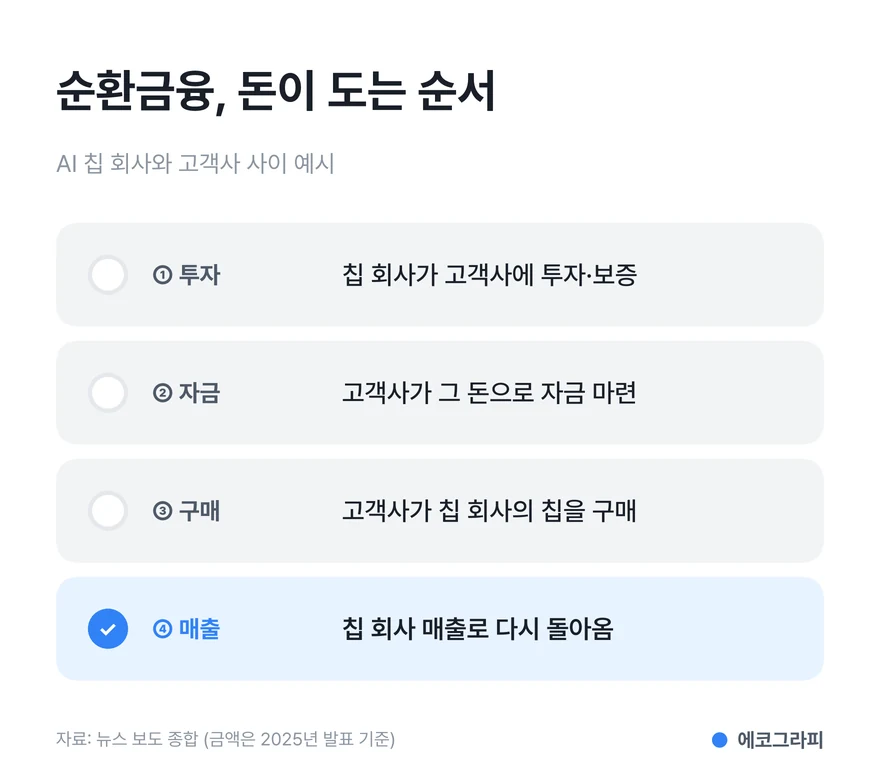
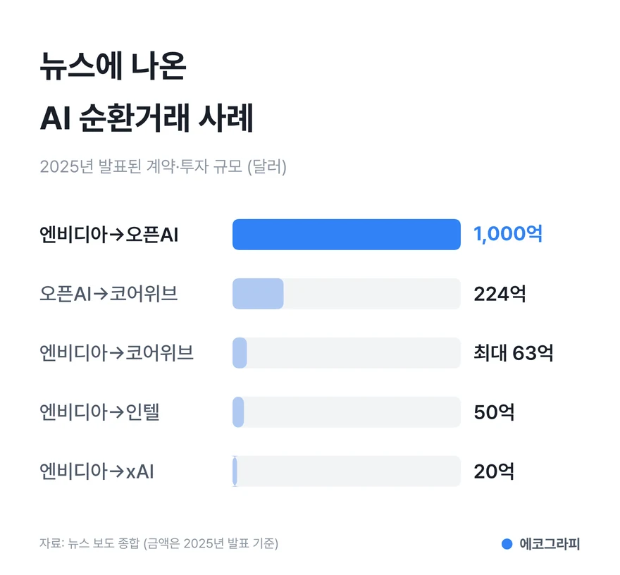
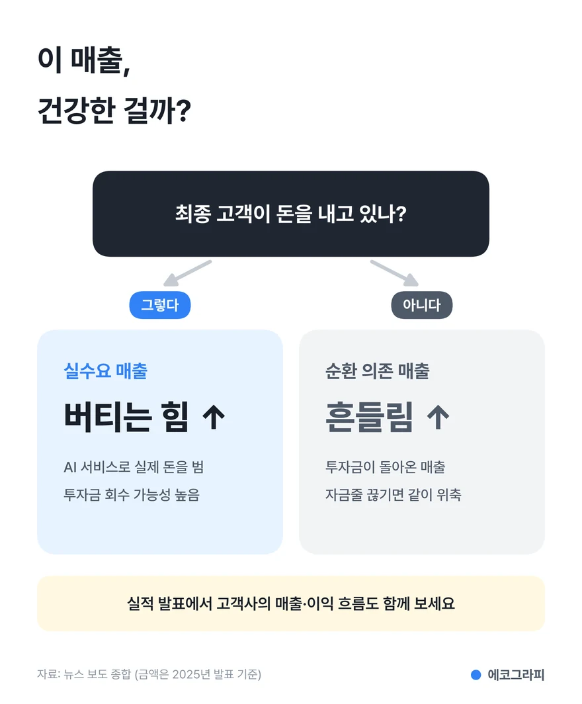
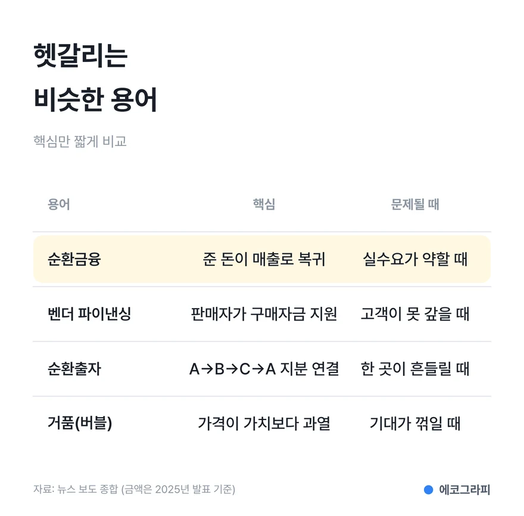

지난 13일, 젠슨 황이 엔비디아 CEO에서 물러난 뒤 코스피 반도체주가 약했어요. 이날 증권사 시황 코멘트에 이런 단어가 나왔어요. "AI 생태계의 순환금융 구조가 지속될 수 있을지에 대한 우려". 처음 들으면 어려운데, 구조를 알면 생각보다 단순해요.
순환금융(Circular Financing): 회사가 고객에게 투자하거나 돈을 빌려주고, 그 고객이 받은 돈으로 다시 그 회사 제품을 사는 구조예요.
동네 빵집으로 비유해 볼게요. 빵집 사장님이 카페에 1,000만 원을 투자해요. 카페는 그 돈으로 빵집 빵을 1,000만 원어치 사요. 빵집 장부에는 매출 1,000만 원이 찍히지만, 사실 밖에서 새로 들어온 돈은 없어요. 카페 손님이 빵을 많이 사 먹어야 진짜 장사가 된 거예요.

AI 업계에선 칩 회사가 AI 개발사나 데이터센터 회사에 지분 투자·대출·보증을 해 주고, 그 회사들이 칩을 사는 흐름이 여러 번 나왔어요. 데이터센터를 짓는 초기엔 돈이 워낙 많이 들어서, 판매자가 자금을 대 주는 방식이 생태계를 키우는 전략이라는 시각도 있어요.

대표 사례는 2025년 9월 발표된 엔비디아의 오픈AI 투자(최대 1,000억 달러)예요. 오픈AI는 데이터센터 임대 회사 코어위브에 비용을 내고, 엔비디아는 코어위브의 남는 컴퓨팅을 사 주기로 했어요. 돈이 세 회사 사이를 한 바퀴 도는 모양이죠.
걱정하는 쪽은 2000년 닷컴 버블 때를 떠올려요. 당시 통신장비 회사 루슨트는 신생 통신사에 장비 살 돈을 빌려줘 매출을 키웠는데, 고객사들이 무너지자 큰 손실을 봤어요.


벤더 파이낸싱은 판매자가 구매자에게 구매 자금을 대 주는 것 자체를 말해요. 순환금융은 이게 여러 회사 사이에서 고리처럼 이어진 모습에 붙는 표현이에요. 순환출자는 계열사끼리 지분을 꼬리 물듯 가진 구조로, 돈이 아니라 지분이 도는 거라 조금 달라요.
아니에요. 투자와 거래가 제대로 공시되면 합법이에요. 다만 실제 수요보다 매출이 커 보일 수 있어서 투자자들이 조심스럽게 봐요.
그렇지 않아요. 고객사가 결국 서비스로 돈을 벌어 투자금을 갚을 수 있다면 성장 전략이 될 수 있어요. 문제는 그 시점이 늦어질 때예요.
AI 뉴스에서는 거의 같은 뜻으로 써요. 다만 회계에서 말하는 '순환거래'는 실체 없이 매출을 부풀리는 부정 거래를 뜻할 때도 있어 구분이 필요해요.
실적 발표에서 주요 고객사가 어디인지, 그 고객사의 매출과 자금 조달 상황이 어떤지를 같이 보면 좋아요.
※ 2026년 11월 기준으로 정리한 글입니다. 세율·제도는 바뀔 수 있으니 거래 전 증권사·국세청 안내를 한 번 더 확인하세요. 특정 종목·상품의 매수·매도 권유가 아닙니다.